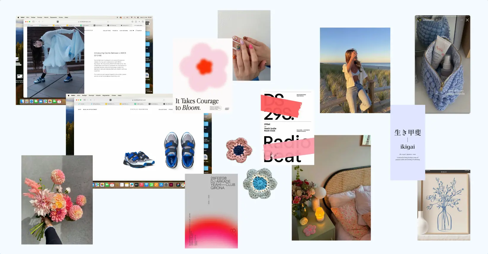
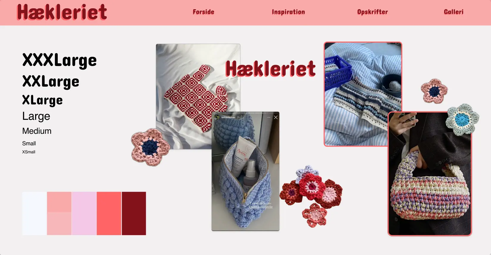
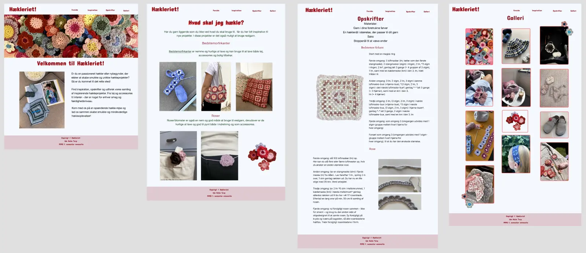

Emnesite
Tema
I Tema 3 blev vi introduceret til User Experience Design (UX), som er en central del af udviklingen af digitale brugergrænseflader (UI). Dette tema gav en grundlæggende forståelse for samspillet mellem brugere og brugergrænseflader og introducerede teorier, værktøjer og metoder til research, design og test i digital produktudvikling. Temaet havde til formål at give erfaring med udvalgte UX/UI-metoder og lære at præsentere vores design- og udviklingsproces samt formidle research- og testresultater til interessenter.
Opgave
I opgave emnesite var vores mål at lave et fuldendt website, hvor vi var med gennem hele processen. I denne opgave brugte vi vores færdigheder fra tema 2 om HTML og CSS i samspil med metoder til research og design; moodborad, styletile mm. For derefter at teste sitet på både brugere, tænke-højt test, 5 sekunder test samt BERT og på hvordan vores site fungere med Lighthouse test.
Research og idé
I starten af processen for emnesitet gik vi igang med idégenering som tog form af en brainstorm for emnet på sitete. Her valgte jeg emnet hækle. Derefter gik vi igang med at udforme ideèn i form af moodboard og stylyetile, for at finde udtrykket for sitet.
Moodboard
Styletile
Digital prototype
Efter at havde lavet research, lavede jeg en digital klikbar prototype for at se hvordan sitet ville udforme sig.
Kodet site
Udfra min digitale prototype begyndte jeg at kode mit site med html og css. Html for at lave strukturen i sitet og css for at style og lave layout. Ny css jeg lærte i dette tema var at implementere fonte og at lave et dynamisk galleri, hvor billederne blender sammen frem for at blive inde for grid linjerne.
I HTML gives sektionen for galleriet klassen 'container' og billederne klassen 'galleri'. I CSS bruges klasserne så ledes 'container' bruges til at definere breden, koloner og kolone mellemrum. 'Galleri' bruges til at definere størrelsen på billederne, mellemrum fra billede til billede og til sidst 'break-inside: avoid;' for at billederne samler sig frem for at ligge på kolone linjerne.